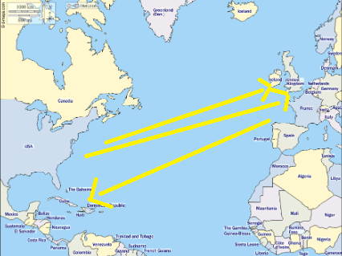
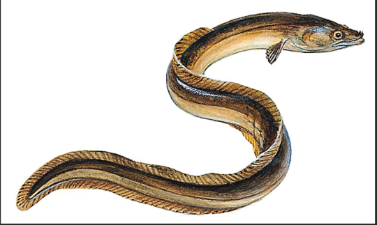
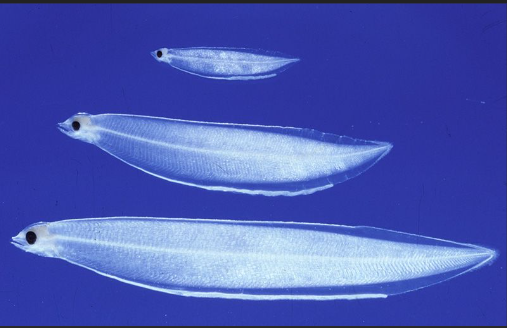
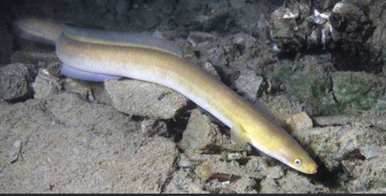

Quand elles ont entre 5 et 8 ans les anguilles quittent leur rivière et rejoignent la mer des Sargasses pour y pondre
 L'anguille ne se nourrit pas pendant cette longue traversée. Elle pond à environ 400 m de profondeur et meurt épuisée. Des larves sortent des oeufs. Emportées par les courants elles font le voyage en sens inverse
 Arrivée près des rivières les larves deviennent des civelles qui vont grossir pour devenir des anguilles. Une anguille peut ramper sur la terre ferme si un obstacle la gene dans la rivière et rejoindre le cous d'eau plus loi